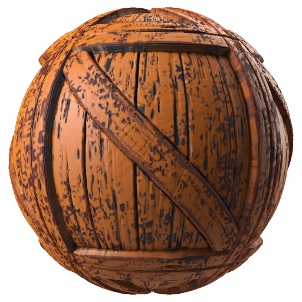
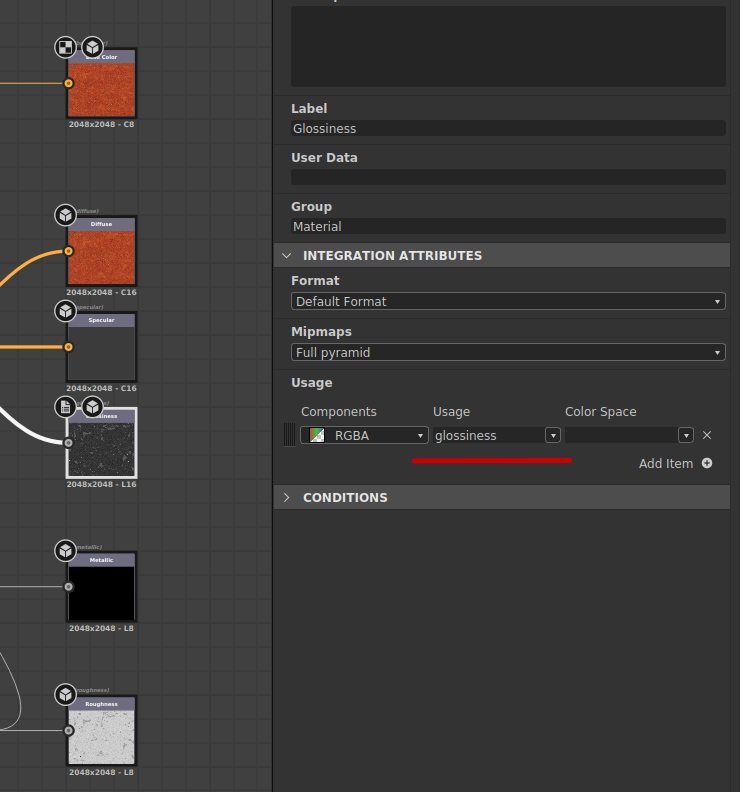
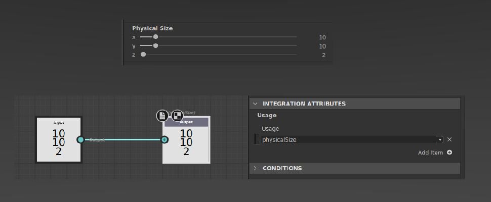

Thumbnail creation with SAT
Generate thumbnail with pysbs.batchtools.thumbnail
A helper function is available to render thumbnail from a .sbs or a .sbsar easily thumbnail.generate()
To get more details on the different options check the definition thumbnail module
By default thumbnail.generate uses an internal graph that uses PBRRender node. Only two parameters are mandatory, an input file .sbs or .sbsar and an output path:
from pysbs.batchtools import thumbnail
thumbnail_path = thumbnail.generate("input.sbs", aOutputPath="thumbnail.png")
Kind of generated thumbnail:
{kind=link}
Example, generate thumbnail for each graph and each presets:
from pysbs import substance, context
from pysbs.batchtools import thumbnail
doc = substance.SBSDocument(context.Context(), "lib_woodtoys.sbs")
doc.parseDoc()
for graph in doc.getSBSGraphList():
for preset in graph.mPresets:
thumbnail.generate(doc.mFileAbsPath, aGraphIdentifier=graph.mIdentifier,
aPreset=preset.mLabel,
aOutputPath=doc.mFileAbsPath.replace("lib_woodtoys.sbs", "{}-{}.png".format(graph.mIdentifier, preset.mLabel)))
{kind=link}
Setup a graph correctly to be render as thumbnail
The process can not guess what each outputs does, that’s why Usages must used. thumbnail.generate will used the output’s Usages to find out which output should be connected to the corresponding input.
It’s also possible to precise a PhysicalSize to gained quality. PhysicalSize can be set in graph attribute or with a output value node.
Example of correct outputs, each graph’s outputs has a correct Usage to defined the output type:
{kind=link}
Two different ways to setup a PhysicalSize:
{kind=link}
Generating and embedding thumbnail directly from a substance or substance archive
A great improvement of PySBS is the possibility to edit a .sbsar file and the first functionality is to add a thumbnail to a substance archive file. Whatever it’s a substance or an archive, generating and embedding a thumbnail is super simple:
doc = sbsarchive.SBSArchive(context.Context(), "my_sbsar_without_thumbnail.sbsar")
doc.parseDoc()
doc.generateThumbnail(saveArchiveAs="my_sbsar_with_thumbnail.sbsar")
# it will generate it for all graph except if you give a graph identifier as arg
doc = substance.SBSDocument(context, "my_sbsar_without_thumbnail.sbs")
doc.parseDoc()
doc.generateThumbnail()
# it will generate it for all graph except if you give a graph identifier as arg
doc.writeDoc("my_sbsar_with_thumbnail.sbs")
To get more details check the substance definition here: SBSDocument.generateThumbnail()
and check the substance archive definition here: SBSArchive.generateThumbnail()